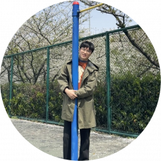
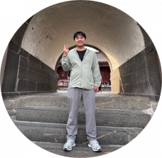

文鹏
2026级

Xinrong is a Professor at Shanghai Institute of Organic Chemistry, Chinese Academy of Sciences (CAS). She received her B.S. degree in chemistry from Wuhan University in 2008 and her Ph.D. degree in chemistry from Boston University in 2014 (Supervisor: Mark W. Grinstaff). Her Ph.D. training was also received from Massachusetts Institute of Technology from 2011 to 2013 (Supervisor: Yang Shao-Horn).
She then worked as a Postdoctoral Associate at Boston University, Research Team Leader at BASF Global Battery Materials, Associate Professor at Yunnan University, Principal Research Investigator at Duke Kunshan University and Duke University (secondary appointment).
Xinrong’s research interest centers on the interdisciplinary interface of organic materials design principles and sustainable energy storage technologies and devices, where her research group focuses on chemistry that enables design and synthesis of new electrolyte and electrode molecules for the applications such as solid-state batteries, lithium metal batteries and organic batteries.
She has received the Outstanding Young Talent by National Natural Science Foundation of China and serves at the early career advisory board at Material Chemistry Frontiers (RSC), etc.

